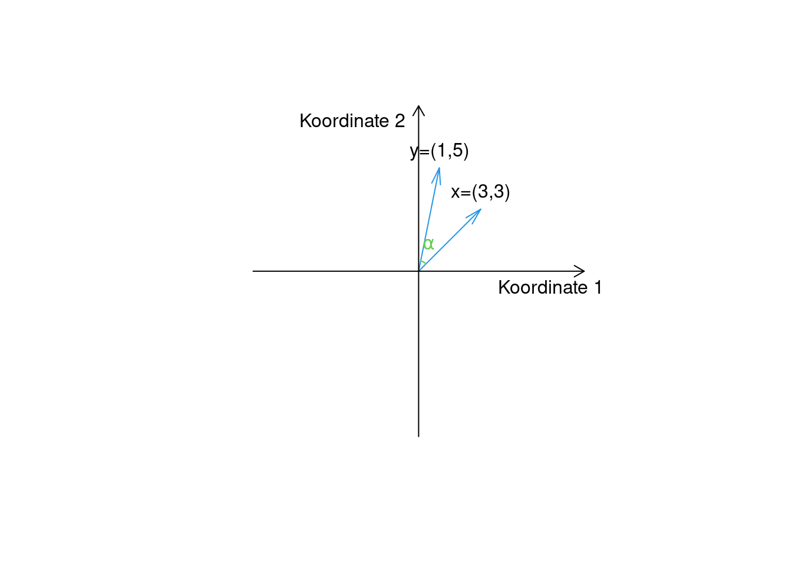

Kapitel 9 Matrizen und Grundlegende Matrixoperationen
Mit Matrizen werden Daten auf sehr effiziente und wirkungsvolle Weise dargestellt und bearbeitet. Eine wichtige Anwendung von Matrizen ist die Lösung großer linearer Gleichungssysteme. Man fasst die Koeffizienten \(a_{ij}\) eines solchen linearen Gleichungssystems in einer Matrix \(A\) zusammen und schreibt die Unbekannten als Vektor \(\bf x\). Die Konstanten auf der rechten Seite der Gleichungen landen auch in einem Vektor \(\bf b.\) Als Ergebnis, kann man das System bündig darstellen: \(A\bf{x} = \bf{b}\) und mit Matrix-Operationen effizient lösen.
\(\leadsto\) In diesem Kapitel lernen wir Matrizen und Vektoren, bzw. die Operation mit diesen kennen.
Eine Matrix kann man sich als Tabelle vorstellen, mit dem zusätzlichen Vorteil, dass man mit Matrizen rechnen kann. Matrizen können bspw. zur Lösung linearer Gleichungssysteme eingesetzt werden.
9.1 Matrizen
Definition 9.1 (Matrix) Eine \((m\times n)\)-Matrix \(A\) ist ein rechteckiges Zahlenschema aus \(m\) Zeilen und \(n\) Spalten: \[\begin{equation*} A=\begin{pmatrix} a_{11} & a_{12} & a_{13} & . & . & . & a_{1n} \\ a_{21} & a_{22} & a_{23} & . & . & . & a_{2n} \\ . & . & . & . & . & . & . \\ . & . & . & . & . & . & . \\ a_{m1} & a_{m2} & a_{m3} & . & . & . & a_{mn}% \end{pmatrix} \end{equation*}\] Das Element \(a_{ij}\in \mathbb R\) bezeichnet dabei den Eintrag von \(A\), der in der \(i\)-ten Zeile und der \(j\)-ten Spalte steht.
- Matrizen werden häufig mit Groß buchstaben des Alphabets bezeichnet.
- Die Dimensionen einer Matrix (wichtig für Rechenoperationen!) werden in folgernder Form angegeben \((m\times n) = (\text{Anzahl Zeilen}\times\text{Anzahl Spalten})\).
Definition 9.2 (Vektoren)
- Ein Spaltenvektor ist eine Matrix der Dimension \(m\times 1\), d.h. eine Matrix bestehend aus einer Spalte mit \(m\) Einträgen. Bspw.: \[\mathbf b = \begin{pmatrix} b_1 \\ b_2 \\ \vdots \\ b_m \end{pmatrix}.\]
- Analog ist ein Zeilenvektor eine \(1\times n\) Matrix. Bspw.: \[\mathbf c = ( c_1 \ c_2 \ ... \ c_n).\]
- Vektoren werden mit Kleinbuchstaben des römischen Alphabets bezeichnet.
- Alle Operationen für Matrizen gelten automatisch für Vektoren, da diese lediglich besondere Matrizen darstellen.
- Spalten- und Zeilenvektoren kann man ineinander überführen in dem man sie transponiert, d.h. die Dimensionen vertauscht. Man schreibt \(x^\top\) um eine transponierte Version von \(x\) zu erhalten.
Beispiel 9.1 (Maschinenlaufzeit)
- In der Aufgabe 8.3 haben wir das folgende LGS gelöst:
\[\begin{align*} \color{red}{2}x_1 + \color{red}{2}x_2 + \color{red}{2}x_3 &= \color{red}{8},\\ \color{blue}{3}x_1 + \color{blue}{4}x_2 +\color{blue}{1}x_3 &=\color{blue}{8},\\ \color{green}{6}x_1 + \color{green}{\frac{10}3} x_2 + \color{green}{\frac 23}x_3 &= \color{green}{8}. \end{align*}\]
- Die Koeffizienten (Stunden für die jeweilige Produktion) der Gleichungen werden in Matrix \(A\) gesammelt:
\[A=\begin{pmatrix} a_{\color{red}11} & a_{\color{red}12} & a_{\color{red}13} & \ldots & a_{\color{red}1n} \\ a_{\color{blue}21} & a_{\color{blue}22} & a_{\color{blue}23} & \ldots& a_{\color{blue}2n} \\ \vdots &\vdots&\vdots&\vdots&\vdots\\ a_{\color{green}m1} & a_{\color{green}m2} & a_{\color{green}m3} & \ldots& a_{\color{green}mn} \end{pmatrix} = \begin{pmatrix} \color{red}{2} & \color{red}{2} & \color{red}{2} \\ \color{blue}{3} & \color{blue}4 & \color{blue}1 \\ \color{green}{6} & \color{green}{\frac{10}3} & \color{green}{\frac 23} \end{pmatrix} \]
- Die benötigten Stunden, die für das jeweilige Produkt an der zweiten Maschine benötigt werden als ein \(n\)-dimensionaler Zeilenvektor:
\[\mathbf a_2 = (a_{21} ~ a_{22} ~\ldots ~ a_{2n}) = (\color{blue}3~~ \color{blue}4 ~~\color{blue}1)\]
aufschreiben.
- Die verfügbaren täglichen Laufzeiten von je \(8h\) stellen einen \(m\)-dimensionaler Spaltenvektor dar:
\[\mathbf b = \begin{pmatrix} b_1 \\ b_2 \\b_3 \end{pmatrix}= \begin{pmatrix} \color{red}8 \\ \color{blue}{8} \\ \color{green}8 \end{pmatrix}.\]
In diesem Fall haben wir drei Unbekannten, die im Vektor \(\bf x\) landen:
\[\mathbf x = \begin{pmatrix} x_1 \\ x_2 \\ x_3 \end{pmatrix}.\]
Abgesehen von der Zusammenfassung linearer Gleichungssysteme sind Matrizen für die Darstellung anderer komplexer Daten nützlich, wie das folgende Beispiel zeigt.
Beispiel 9.2 (Übergangsmatrix)
Eine Übergangsmatrix stellt den Übergang von einem Zustand in einen anderen Zustand dar. Beispiele für “Zustände”: Zugehörigkeit zu einer sozialen Schicht, Einkommensgruppe, geographische Lage.
Beispiel: regionale Migration
- In einem Land mit drei Regionen \(1\), \(2\) und \(3\), wird der Anteil an der Bevölkerung, der in einer Region bleibt oder in eine andere Region zieht, durch folgende Übergangsmatrix beschrieben:
\[P = \begin{pmatrix} p_{11} \ p_{12} \ p_{13} \\ p_{21} \ p_{22} \ p_{23} \\ p_{31} \ p_{32} \ p_{33} \end{pmatrix},\] wobei das Element \(p_{ij}\) den Bevölkerungsanteil bezeichnet, der aus Region \(j\) in die Region \(i\) zieht. - Die Elemente auf der Diagonalen, \(p_{ii}\), \(i = 1,2,3\), bezeichnen den Anteil derjenigen Personen, die in ihrer Region bleiben. - Nehmen wir an, die Übergangsmatrix hat folgende Einträge:
\[P = \begin{pmatrix} \color{red}{p_{11}} & \color{orange}{p_{12}} & p_{13} \\ \color{blue}{p_{21}} & p_{22} & p_{23} \\ \color{green}{p_{31}} & p_{32} & p_{33} \end{pmatrix}=\begin{pmatrix} \color{red}{0,80} \ \ \color{orange}{0,15} \ \ 0,05 \\ \color{blue}{0,10} \ \ 0,70 \ \ 0,05 \\ \color{green}{0,10} \ \ 0,15 \ \ 0,90 \end{pmatrix}\]
- Dies drückt aus, dass \(\color{red}{80 \%}\) der Bevölkerung aus Region \(1\) in Region \(1\) bleiben, \(\color{blue}{10 \%}\) ziehen aus Region \(1\) nach Region \(2\) und weitere \(\color{green}{10 \% }\) ziehen von Region \(1\) nach Region \(3\).
- Analog bedeutet der Eintrag \(p_{12} = \color{black}{0,15}\), dass \(\color{orange}{15 \%}\) der Bevölkerung von Region \(2\)= nach Region \(1\) ziehen.
Vorteil u.a.: Die Matrixnotation erlaubt die kurze und übersichtliche Darstellung dieser Zusammenhänge. [Wir kommen später auf dieses Beispiel zurück…]
Es gibt einige spezielle Matrizenarten, die in der folgenden Definition zusammengefasst sind.
Definition 9.3 (spezielle Matrizen)
Die Nullmatrix ist eine Matrix, deren Einträge alle Null sind (\(a_{ij} = 0\) für \(i = 1,...m\) und \(j = 1,...n\)).
Eine quadratische Matrix ist eine Matrix mit gleicher Zeilen- und Spaltenanzahl (\(m = n\)).
Eine Diagonalmatrix ist eine quadratische Matrix, die überall Nullen hat außer auf der Hauptdiagonalen.
Eine obere (untere) Dreiecksmatrix ist eine Matrix, die nur oberhalb (unterhalb) der Diagonalen von Null verschiedene Einträge besitzt.
Eine Einheitsmatrix ist eine Diagonalmatrix, deren Diagonalelemente alle Eins sind. Die Einheitsmatrix mit Dimension \(n × n\) wird mit \(I_n\) bezeichnet.
Beispiel für \(n = 4\): \[I_4 = \begin{pmatrix} 1 \ \ 0 \ \ 0 \ \ 0 \\ 0 \ \ 1 \ \ 0 \ \ 0 \\ 0 \ \ 0 \ \ 1 \ \ 0 \\ 0 \ \ 0 \ \ 0 \ \ 1 \end{pmatrix}\]
9.2 Grundlegende Matrizenoperationen
Häufig ist es notwendig, zwei Matrizen mit einander zu vergleichen, zu addieren unds zu multiplizieren oder sogar den “Kehrwert” einer Matrix zu bilden.
Definition 9.4 (Gleichheit zweier Matrizen) Zwei Matrizen \(A\) und \(B\) sind gleich, wenn sie die gleiche Dimension haben und alle Elemente identisch sind, d.h. wenn \(a_{ij} = b_{ij}\), für alle \(i = 1, ... , m\) und \(j = 1, ... , n\).
Zum Beispiel sind die beiden \(2 × 2\) Matrizen \(\begin{pmatrix} 2 \ \ 2x \\ 3 \ \ \ 1 \end{pmatrix} und \begin{pmatrix} \ \ 2 \ \ \ \ \ \ \ \ 4 \\ x+y \ \ 1 \end{pmatrix}\)
gleich, genau dann, wenn \(x = 2\) und \(y = 1\).
(Da \(2x=4\) und \(x+y=3\) gelten muss.)
Definition 9.5 (Addition und Substraktion von Matrizen) Die Summe zweier Matrizen \(A\) und \(B\) existiert, wenn die Matrizen die gleiche Dimension haben; in diesem Fall ist die Summe elementweise definiert: \[\begin{align*} A+B&= \begin{pmatrix} a_{11} & a_{12} & a_{13} & \ldots & a_{1n} \\ a_{21} & a_{22} & a_{23} & \ldots & a_{2n} \\ \vdots & \vdots& \vdots & & \vdots\\ a_{m1} & a_{m2} & a_{m3} & \ldots & a_{mn} \end{pmatrix}+ \begin{pmatrix} b_{11} & b_{12} & b_{13} & \ldots & b_{1n} \\ b_{21} & b_{22} & b_{23} & \ldots & b_{2n} \\ \vdots & \vdots & \vdots & & \vdots\\ b_{m1} & b_{m2} & b_{m3} & \ldots & b_{mn} \end{pmatrix}\\[10pt] &= \begin{pmatrix} a_{11}+b_{11} & a_{12}+b_{12} & a_{13}+b_{13} & \ldots & a_{1n}+b_{1n} \\ a_{21}+b_{21} & a_{22}+b_{22} & a_{23}+b_{23} & \ldots & a_{2n}+b_{2n} \\ \vdots & \vdots & \vdots & & \vdots\\ a_{m1}+b_{m1} & a_{m2}+b_{m2} & a_{m3}+b_{m3} & \ldots & a_{mn}+b_{mn} \end{pmatrix} \end{align*}\] Die Differenz \(A − B\) ist analog definiert.
Beispiel 9.3 (Addition und Subtraktion von Matrizen) Stellen Sie sich die Situation vor, in der der Produktionsprozess im Beispiel 9.1 auf folgende Weise geändert wird:
Die Produktionsstunden auf Maschine 1 werden für jedes der drei Produkte um eine Stunde erhöht.
Produktionsstunden an Maschine 2 bleiben unverändert.
Die Produktionsstunden auf Maschine 3 verringern sich um \(\frac 13\) für Produkt 2 und erhöhen sich um \(\frac 13\) für Produkt 3.
Dann kann der neue Produktionsprozess durch die Summe der Matrizen \(A\) und \(B\) beschrieben werden, wobei:
\(A = \begin{pmatrix} 2 & 2 & 2 \\ 3 & 4 & 1 \\ 6 & \frac{10}3 & \frac 23 \end{pmatrix}\) und \(B = \begin{pmatrix} 1 & 1 & 1 \\ 0 & 0 & 0 \\ 0 & -\frac 13 & \frac 13 \end{pmatrix}\)
Ihre Summe ist elementweise definiert: \[\begin{align*} A+B&= \begin{pmatrix} 2 & 2 & 2 \\ 3 & 4 & 1 \\ 6 & \frac{10}3 & \frac 23 \end{pmatrix}+ \begin{pmatrix} 1 & 1 & 1 \\ 0 & 0 & 0 \\ 0 & -\frac 13 & \frac 13 \end{pmatrix}\\ &= \begin{pmatrix} 2+1 & 2+1 & 2+1 \\ 3+0 & 4+0 & 1+0 \\ 6+0 & \frac{10}3 - \frac 13 & \frac 23+\frac 13 \end{pmatrix}\\ &= \begin{pmatrix} 3 & 3 & 3 \\ 3 & 4 & 1 \\ 6 & 3 & 1 \end{pmatrix} \end{align*}\]
Die Multiplikation einer Matrix mit einem Skalar bezieht sich auf eine Skalierung; jedes Element der Matrix wird hierbei mit einem Skalar (= einer reellen Zahl) multipliziert.
Definition 9.6 (Multiplikation mit einem Skalar) Das Produkt einer reellen Zahl \(\lambda\) mit einer Matrix \(A\) ist definiert als: \[\begin{equation*} \lambda\cdot A=\lambda\cdot \begin{pmatrix} a_{11} & a_{12} & a_{13} & \ldots & a_{1n} \\ a_{21} & a_{22} & a_{23} & \ldots & a_{2n} \\ \vdots & \vdots& \vdots & & \vdots\\ a_{m1} & a_{m2} & a_{m3} & \ldots & a_{mn}% \end{pmatrix} = \begin{pmatrix} \lambda\,a_{11} & \lambda\, a_{12} & \lambda\, a_{13} & \ldots & \lambda\, a_{1n} \\ \lambda\, a_{21} & \lambda\, a_{22} & \lambda\, a_{23} & \ldots & \lambda\, a_{2n} \\ \vdots & \vdots& \vdots & & \vdots\\ \lambda\, a_{m1} & \lambda\, a_{m2} & \lambda\, a_{m3} & \ldots & \lambda\, a_{mn}% \end{pmatrix} \end{equation*}\]
Beispiel 9.4 (Multiplikation von Matrizen mit einer Zahl) Stellen Sie sich die Situation vor, in der der Produktionsprozess im Beispiel 9.1 effizienter wird und die Produktionsstunden um 50 % reduziert werden. Dies entspricht der Multiplikation von \(A\) mit \(0,5\):
\[\begin{align*} 0,5\cdot A&= 0,5\cdot \begin{pmatrix} 2 & 2 & 2 \\ 3 & 4 & 1 \\ 6 & \frac{10}3 & \frac 23 \end{pmatrix}\\ &= \begin{pmatrix} 0,5\cdot 2 & 0,5\cdot 2 & 0,5\cdot 2 \\ 0,5\cdot 3 & 0,5\cdot 4 & 0,5\cdot 1 \\ 0,5\cdot 6 & 0,5\cdot \frac{10}3 & 0,5\cdot\frac 23 \end{pmatrix}\\ &= \begin{pmatrix} 1& 1 & 1 \\ 1,5 & 2 & 0,5 \\ 3 & \frac 53 & \frac 13 \end{pmatrix} \end{align*}\]
Bevor wir die Multiplikation von Matrizen definieren, betrachten wir als Spezialfall das Produkt zweier Vektoren (Skalarprodukt).
Definition 9.7 (Skalarprodukt) Es sei \(x^\top\) ein \(n\)-dimensionaler Zeilenvektor (\(1 × n\)) und \(y\) ein \(n\)-dimensionaler Spaltenvektor (\(n × 1\)). Dann ist das Skalarprodukt \(x^\top\) y definiert als die Summe der Produkte der Elemente von \(x\) und \(y\):
\[\begin{equation*} \begin{pmatrix} x_{1} & x_{2} & \ldots & x_{n} \end{pmatrix} \, \begin{pmatrix} y_{1}\\ y_{2}\\ \vdots\\ y_{n} \end{pmatrix} = x_{1} y_{1} + x_{2} y_{2} + \cdots + x_{n} y_{n} =\sum_{i=1}^n x_{i} y_{i}. \end{equation*}\]
Das Skalarprodukt ist also eine Operation, die aus zwei Vektoren eine Zahl liefert. Diese Zahl kann geometrisch interpretiert werden. Sie sagt aus, inwiefern die Vektoren, die als Pfeile aus dem Koordinatenursprung zu dem Punkt mit Vektorelementen als Koordinaten dargestellt werden, in die gleiche Richtung zeigen (siehe die Abbildung unten).
Ist das Skalarprodukt \(\color{green}{positiv}\), ist der Winkel zwischen den Pfeilen \(\color{green}{\alpha<90°}\). Bei einem \(\color{red}{negativen}\) Skalarprodukt wird der Winkel \(\color{red}{\beta>90°}\). Ist das Skalarprodukt Null, so stehen die Pfeile senkrecht zu einander (im 90° Winkel).

Abbildung 9.1: Illustation von Skalarprodukt
Dieser Winkel zwischen den Vektoren als Pfeilen kann auch als ein Ähnlichkeitsmass genutzt werden: je kleiner der Winkel, desto ähnlicher sind die Daten, die als Punkte in \(\mathbb R^n\) dargestellt werden.
Beispiel 9.5 (Skalarprodukt)
- Das Skalarprodukt \(\bf x^\top y\) von \(\bf x = \begin{pmatrix} 3 & 3 \end{pmatrix}\) und \(\bf y = \begin{pmatrix} 1\\ 5 \end{pmatrix}\) ist:
\[\begin{equation*}
\begin{pmatrix}
3 & 3
\end{pmatrix}
\,
\begin{pmatrix}
1\\
5
\end{pmatrix}
= 3\cdot 1 + 3 \cdot 5 = 18.
\end{equation*}\]

- Das Skalarprodukt \(\bf x^\top y\) von \(\bf x = \begin{pmatrix} 3 & -3 \end{pmatrix}\) und \(\bf y = \begin{pmatrix} -1\\ 5 \end{pmatrix}\) ist: \[\begin{equation*} \begin{pmatrix} 3 & -3 \end{pmatrix} \, \begin{pmatrix} -1\\ 5 \end{pmatrix} = 3\cdot (-1) + (-3) \cdot 5 = -18. \end{equation*}\]
Damit wir das Skalarprodukt im Sinne von Kosinus des entsprechenden Winkels interpretieren können, müssen wir es normieren, d.h. die Längen der Vektoren berücksichtigen. Dafür definieren wir die Euklidische Norm eines Vektors.
Definition 9.8 (Euklidische Norm eines Vektors) Die Euklidische Norm (Länge) eines Vektors \(x\) wird mit \(\lvert \lvert x \rvert \lvert\) bezeichnet und ist definiert als: \[\lvert \lvert x \rvert \lvert = \sqrt{x^\top x} = \sqrt{ \sum_{i=1}^{n} x_i^2 }\]
Beispiel 9.6 (Euklidische Norm) Die euklidische Norm von \(\bf z = \begin{pmatrix} 0\\ 4\\ -3 \end{pmatrix}\) ist:
\[\begin{align*} ||{\bf{z}}||&={\bf{z}}^\top {\bf{z}}\\ &=\sqrt{\begin{pmatrix} 0 & 4 & -3 \end{pmatrix} \cdot \begin{pmatrix} 0\\ 4\\ -3 \end{pmatrix}}\\ &= \sqrt{(0)^2 + (4)^2 + (-3)^2} =\sqrt{25} = 5. \end{align*}\]
Beispiel 9.7 (Skalarprodukt)
Fortführung von 9.5.
Das Skalarprodukt \(\bf x^\top y\) von \(\bf x = \begin{pmatrix} 3 & 3 \end{pmatrix}\) und \(\bf y = \begin{pmatrix} 1\\ 5 \end{pmatrix}\) ist \(18.\)
Die Euklidische norm von \(x\): \[||x|| = \sqrt{x^\top x} = \sqrt{3^2+3^2}=\sqrt{18}.\]
Die Euklidische norm von \(y\): \[||y|| = \sqrt{y^\top y} = \sqrt{1^2+5^2}=\sqrt{26}.\]
Der Winkel zwischen den Vektoren:
\[\begin{align}\alpha &= \arccos\left(\frac{x^\top y}{||x||\cdot||y||}\right) \\ &= \arccos\left(\frac{18}{\sqrt{18}\sqrt{26}}\right)= \arccos(0.8321)= 0.588rad\\ &\approx33.7° \end{align}\]

Es bleibt nur der Fall, wenn das Skalarprodukt Null ist. In diesem Fall stehen die Vektoren senkrecht zu einander. Solche senkrechte Vektoren bilden bspw. klassische Koordinatensysteme. Es ist ausserdem sinnvoll wenn die Vektoren, die die Basis von solchen Koordinatensystemen bilden, die Länge \(1\) haben (intuitiv: jeweils ein Schritt in die jeweilige Richtung). Wenn man die Länge von Vektoren auf \(1\) bringt, sagt man dazu normieren. Die folgende Definition präzisiert die Begriffe.
Definition 9.9 (Orthogonale und orthonormale Vektoren) Zwei Vektoren sind orthogonal, wenn ihr Skalarprodukt null ist. Anschaulich bedeutet das, dass die beiden Vektoren senkrecht zu einander stehen. Vektoren, die paarweise orthogonal sind und alle die Länge eins haben, heißen orthonormiert.
Aufgabe 9.1 (orthonormale Vektoren finden) Betrachten Sie \(\mathbf x = \begin{pmatrix} a & b & a \end{pmatrix}\) und \(\bf y = \begin{pmatrix} 0\\ 0,6\\ -0,8 \end{pmatrix}.\)
Finden Sie \(a,b>0\), so dass die Vektoren orthonormal sind.
Tipp: kalkuliere zuerst das Skalarprodukt der beiden Vektoren (als Funktion von \(a\) und \(b\)). Danach, schreibe die Länge von \(\bf x\) auf, ebenfalss als Funktion von \(a\) und \(b\). Benutze die beiden Gleichungen um die Unbekannten \(a\) und \(b\) zu berechnen.
Antwort
Das Skalarprodukt ist:
\[a\cdot 0+ b \cdot 0,6 + a\cdot (-0,8) =0,6 b -0,8a \stackrel{!}{=} 0.\]
Also, \(a=3/4\cdot b.\)
Andererseits ist die Norm von \(\bf x\):
\[\sqrt{a^2+b^2+a^2} \stackrel{!}{=} 1\rightarrow 2a^2 + b^2 = 1. \]
Wenn wir das obige \(a=3/4\cdot b,\) einsetzen, erhalten wir:
\[2\cdot 9/16b^2 + b^2 = 1\rightarrow 17/8b^2 =1\rightarrow b = \sqrt{8/17} = 2\sqrt{2/17}.\]
Daher ist \(a=3/4\cdot 2\sqrt{2/17} = 1,5 \cdot \sqrt{2/17}.\)
Daher:
\(\mathbf x = \begin{pmatrix} 1,5 \cdot \sqrt{2/17} & \sqrt{8/17} & 1,5 \cdot \sqrt{2/17} \end{pmatrix}\)
Nun definieren wir das Produkt zweier Matrizen. Das Produkt zweier Matrizen ist so definiert, dass einige Eigenschaften der Multiplikation reeller Zahlen erhalten bleiben.
Definition 9.10 (Produkt zweier Matrizen) Es sei \(A\) eine \(m × n\) Matrix und \(B\) eine \(n × q\) Matrix (d.h. die Anzahl der Spalten in \(A\) entspricht der Anzahl der Zeilen in \(B\) – wichtig!). Dann ist das Produkt \[C = A B\] definiert als die \(m × q\) Matrix mit den Elementen: \[c_{ij}= \sum_{k=1}^{n} a_{ik} \ b_{kj}, \ i = 1, ... , m, \ j = 1, ... , q.\]
Mit anderen Worten: Der Eintrag \(c_{ij}\) ist das Skalarprodukt des \(i\)-ten Zeilen- und des \(j\)-ten Spaltenvektors:
\[\begin{equation*} \begin{pmatrix} a_{i1} & a_{i2} & \ldots & a_{in} \end{pmatrix} \, \begin{pmatrix} b_{1j}\\ b_{2j}\\ \vdots\\ b_{nj} \end{pmatrix} = a_{i1} b_{1j} + a_{i2} b_{j2} + \cdots + a_{in} b_{nj} =c_{ij}. \end{equation*}\]
Beispiel 9.8 (Matrixmultiplikation) Es seien \(A\) und \(B\) gegeben als: \[\begin{equation*} A=\begin{pmatrix} 3 & \phantom{-}1 \\ 2 & -2\\ 0 & \phantom{-}2% \end{pmatrix} ,\quad\quad B=\begin{pmatrix} 1 & 0 & -1\\ 2 & 3 & \phantom{-}0% \end{pmatrix} \end{equation*}\]
Dann ist das Produkt von \(A\) und \(B\) die folgende \(3\times 3\) Matrix: \[\begin{align*} AB &= \begin{pmatrix} 3\cdot 1+1\cdot2=5 & 3\cdot 0+1\cdot 3=3 & 3\cdot (-1)+1\cdot 0=-3\\ 2\cdot1-2\cdot2=-2 & 2\cdot 0-2\cdot 3=-6 & 2\cdot (-1)-2\cdot 0=-2\\ 0\cdot 1+2\cdot 2=4 & 0\cdot 0+2\cdot 3=6 & 0\cdot (-1)+2\cdot 0=0% \end{pmatrix}\\ &=\begin{pmatrix} \phantom{-}5 & \phantom{-}3 & -3 \\ -2 & -6 & -2 \\ \phantom{-}4 & \phantom{-}6 & \phantom{-}0% \end{pmatrix} \end{align*}\]
In Excel wird das Produkt zweier Matrizen wie folgt berechnet:
- Eingabe der Matrizen \(A\) und \(B\) in Excel;
- Auswählen der Zellen, in die das Produkt \(A\, B\) eingetragen werden soll;
- Eingabe der Formul {=MMULT(“Bereich von \(A\)”,“Bereich von \(B\)”)}
- Mit der Bestätigung { CTRL + SHIFT + ENTER} wird das Resultat berechnet.
Gegeben sind die Matrizen
\[A = \begin{pmatrix} ~3 &-5 &~~4 \\ ~~2 & -2 & -2 \end{pmatrix} ~~~~ B = \begin{pmatrix} -2 &-3 \\ ~~5 & -2 \\ ~~4 & ~~4 \ \end{pmatrix}.\]
Matrizen kommen häufig bei der Lösung von (grossen) linearen Gleichungssystemen zum Einsatz.
Beispiel 9.9 (Lineare Gleichungssysteme)
- Wir betrachten ein LGS bestehend aus \(m\) linearen Gleichungen und \(n\) Variablen: \[\begin{equation*} \begin{array}{ccccccccc} a_{11} x_1 &+& a_{12} x_2 &+& \cdots &+& a_{1n} x_n &=& b_1\\ a_{21} x_1 &+& a_{22} x_2 &+& \cdots &+& a_{2n} x_n &=& b_2\\ \vdots & & \vdots & & \ddots & & \vdots & & \vdots\\ a_{m1} x_1 &+& a_{m2} x_2 &+& \cdots &+& a_{mn} x_n &=& b_m \end{array} \end{equation*}\]
- Das LGS kann als Matrixprodukt geschrieben werden: \[\begin{equation*} Ax=b \end{equation*}\] wobei \(A=\begin{pmatrix} a_{11} & a_{12} & \ldots & a_{1n}\\ a_{21} & a_{22} & \ldots & a_{2n}\\ \vdots & \vdots & & \vdots\\ a_{m1} & a_{m2} & \ldots & a_{mn} \end{pmatrix}\), \(x=\begin{pmatrix} x_{1} \\ x_{2}\\ \vdots\\ x_n \end{pmatrix}\), \(b=\begin{pmatrix} b_{1} \\ b_{2}\\ \vdots\\ b_m \end{pmatrix}\).
Der folgende Satz enthält einige Eingenschaften der Matrixmultiplikation.
Theorem 9.1 (Eingenschaften der Matrimultiplikation) Es sei \(A\) eine \(m \times n\) Matrix und seien \(B\) und \(C\) Matrizen, sodass die folgenden Operationen wohldefiniert sind:
Multiplikation mit der Einheitsmatrix: \(A I_n = A\) und \(I_m A = A\).
Assoziativgesetz:
\((A + B) + C = A + (B + C)\) \((AB)C = A(BC)\)
- Kommutativgesetz der Addition:
\(A + B = B + A\)
- Distributivgesetz:
\(A(B + C) = AB + AC\) \((A + B)C = AC + BC\)
Wichtig: Es gibt kein Kommutativgesetzt für die Multiplikation! In der Regel gilt \(AB \neq BA\), selbst wenn beide Produkte wohldefiniert sind.
Aufgabe 9.2 (Matrixmultiplikation I) Überprüfe, dass \(AB\not= BA\) für die Matrizen \(\displaystyle A= \begin{pmatrix} 2 & 1 \\ 1 & 1 \end{pmatrix}\) und \(\displaystyle B= \begin{pmatrix} 1 & -1 \\ 0 &\phantom{-}2 \end{pmatrix}\).
Matrizen, die die Eigenschaft \(AB= BA\) haben heißen idempotente Matrizen.
Definition 9.11 (Idempotenz) Eine quadratische Matrix \(A\) heißt idempotent, wenn gilt: \(A\, A=A\).
Aufgabe 9.3 (Idempotente Matrizen) Man zeige, dass folgende Matrizen idempotent sind: \[\begin{pmatrix} -1 & 2\\ -1 & 2 \end{pmatrix}\] und \[\displaystyle \begin{pmatrix} \phantom{-}3 & \phantom{-}6\\ -1 & -2 \end{pmatrix}\]
Aufgabe 9.4 (Matrixmultiplikation II) Es seien
\(A = \begin{pmatrix} 2 \ 1 \\ 1\ 1 \\ 1 \ 1 \end{pmatrix}\) und
\(B = \begin{pmatrix} 1 \ -1 \ \ 1 \\ 0 \ \ \ \ \ 2 \ \ \ 1\end{pmatrix}\)
Beide Produkte sind wohldefiniert, aber man erkennt leicht, dass \(AB \neq BA\).Antwort

9.3 Ökonomische Anwendungen
Übersichtliche Darstellung und transparente Operationen mit Matrizen finden zahlreiche Anwendungen in wirtschaftlichen Fragestellungen. Hier sind zwei Beispiele.
Beispiel 9.10 (Monatliche Konsumausgaben) Der Spaltenvektor \(x\) stelle die Mengen der \(n\) Güter, die ein Konsument im Monat kauft, dar:
\(x = \begin{pmatrix} x_1 \\ x_2 \\ ... \\ x_n \end{pmatrix}\)
Die zugehörigen Preise (in Euro) je einer Einheit jedes Konsumgutes werden im Zeilenvektor \(p'\) eingetragen:
\(p'=(p_1 \ \ p_2 \ \ ... \ \ p_n)\)
Die monatlichen Konsumausgaben entsprechen dem Skalarprodukt \(E = p^\top x\):
\[E= p^\top x= (p_{1} \ \ p_{2} \ \ ... \ p_{n}) \begin{pmatrix} x_{1} \\ x_{2} \\ . \\ . \\ x_{n} \end{pmatrix} = \sum_{i=1}^{n} p_ix_i.\]
Beispiel 9.11 (Regionale Wanderung) Die Übergangsmatrix aus Beispiel 9.2 beschreibt das Migrationsverhalten der Bevölkerung in drei Regionen.
Aktuell, also zur Zeit \(t = 0\), sei die Bevölkerung wie folgt auf die drei Regionen verteilt (Zahlen in Mio),
\(x_0 = \begin{pmatrix} 5 \\ 10 \\ 6 \end{pmatrix}\)
Mit der Übergangsmatrix \(P\)
\(P = \begin{pmatrix} 0,80 \ \ 0,15 \ \ 0,05 \\ 0,10 \ \ 0,70 \ \ 0,05\\ 0,10 \ \ 0,15 \ \ 0,90 \\ \end{pmatrix}\)
können wir die Bevölkerungsverteilung zu Beginn der nächsten Periode (\(t = 1\)) ermitteln: \(x_1 = Px_0\).
Die Lösung \(x_1 = P x_0\) mit den konkreten Zahlen lautet:
\(Px_0 = \begin{pmatrix} 0,80 \ \ 0,15 \ \ 0,05 \\ 0,10 \ \ 0,70 \ \ 0,05\\ 0,10 \ \ 0,15 \ \ 0,90 \\ \end{pmatrix} \begin{pmatrix} 5 \\ 10 \\ 6 \end{pmatrix}\)
\(= \begin{pmatrix} 0,80 \cdot 5\ + \ 0,15 \cdot 10 \ + \ 0,05 \cdot 6\\ 0,10 \cdot 5 \ + \ 0,70 \cdot 10 \ + \ 0,05 \cdot 6\\ 0,10 \cdot 5\ + \ 0,15 \cdot 10 \ + \ 0,90 \cdot 6 \\ \end{pmatrix} =\begin{pmatrix} 5,8 \\7,8\\ 7,4\end{pmatrix}\)
Demnach leben nach einer Periode mehr Menschen in Regionen 1 und 3, wohingegen die Bevölkerung in Region 2 geschrumpft ist.
Analog lässt sich berechnen, wie sich die Bevölkerung nach zwei Perioden auf die drei Regionen verteilt: \(x_2 = Px_1 = P(Px_0) = P^ 2 x_0\).
Allgemein gilt nach \(n\) Perioden:
\[x_n = Px_{n−1} = P^ n x_0.\]
Aufgabe 9.5 (Regionale Wanderung) Man bestimme \(x_2\), die Bevölkerung in den drei Regionen am Ende der zweiten Periode.
Antwort

Aufgabe 9.6 (Kundenbestellung) Die Kundenbestellungen eines Herstellers sind:
– Kunde 1 bestellt 3 Einheiten des Produkts 1,
– Kunde 2 bestellt 2 Einheiten des Produkts 1,
– Kunde 3 bestellt 0 Einheiten des Produkts 1,
– Kunde 4 bestellt 7 Einheiten des Produkts 1,
– Kunde 1 bestellt 9 Einheiten des Produkts 2,
– Kunde 2 bestellt 1 Einheiten des Produkts 2,
– Kunde 3 bestellt 2 Einheiten des Produkts 2,
– Kunde 4 bestellt 3 Einheiten des Produkts 2,
– Kunde 1 bestellt 5 Einheiten des Produkts 3,
– Kunde 2 bestellt 3 Einheiten des Produkts 3,
– Kunde 3 bestellt 6 Einheiten des Produkts 3,
– Kunde 4 bestellt 4 Einheiten des Produkts 3.
Man schreibe die Bestellungen in Matrixschreibweise und bestimme die Einnahmen pro Kunde für folgende Preise:
– eine Einheit von Produkt 1 kostet p1 = 2 Euro,
– eine Einheit von Produkt 2 kostet p2 = 4 Euro,
– eine Einheit von Produkt 3 kostet p3 = 10 Euro
Antwort

9.4 Transponierte einer Matrix
Wir haben bereits gesehen, dass man durch das Transponieren einen Spaltenvektor zu einem Zeilenvektor und umgekehrt umwandeln kann. Auch Matrizen kann man transponieren und so deren DImensionen vertauschen.
Definition 9.12 (Transponierte einer Matrix) Es sei \(A\) eine \(m\times n\) Matrix. Die transponierte Matrix \(A^\top\), auch geschrieben als \(A^\prime\), ist eine \(n\times m\) Matrix, die entsteht, indem man die Zeilen (Spalten) von \(A\) zu den Spalten (Zeilen) von \(A^\top\) macht: \[\begin{equation*} A^\top = \begin{pmatrix} a_{11} & a_{12} & \ldots & a_{1n}\\ a_{21} & a_{22} & \ldots & a_{2n}\\ \vdots & \vdots && \vdots\\ a_{m1} & a_{m2} & \ldots & a_{mn} \end{pmatrix}^\top = \begin{pmatrix} a_{11} & a_{21} & \ldots & a_{m1}\\ a_{12} & a_{22} & \ldots & a_{m2}\\ \vdots & \vdots & \ldots & \vdots\\ a_{1n} & a_{2n} & \ldots & a_{mn} \end{pmatrix} \end{equation*}\]
Beispiel 9.12 (Transponieren) \[\begin{equation*} \begin{pmatrix} 3 & 1 \\ 2 & -2 \\ 0 & 2% \end{pmatrix}^\top = \begin{pmatrix} 3 & 2 & 0 \\ 1 & -2 & 2% \end{pmatrix} \end{equation*}\]
In Excel wird die Transponierte einer Matrix wie folgt berechnet:
- Eingabe der Matrix \(A\) in Excel;
- Auswählen der Zellen, in die die Transponiert \(A^\top\) eingetragen werden soll;
- Eingabe der Formel {=MTRANS(“Bereich von \(A\)”)}
- Mit der Bestätigung { CTRL + SHIFT + ENTER} wird das Resultat berechnet.
- Sind eine quadratische Matrix und ihre transponierte Matrix identisch, d.h. gilt \(A^\top=A\), dann heißt sie symmetrische Matrix.
- Transponieren eines Vektors führt dazu, dass aus einem Zeilenvektor ein Spaltenvektor wird und umgekehrt.
Theorem 9.2 (Eigenschaften beim Transponieren*)
Transponieren einer transponierten Matrix erzeugt die ursprüngliche Matrix: \((A^{\top})^{\top}=A\).
Die Transponierte einer Summe von Matrizen entspricht der Summe der transponierten Matrizen: \[\begin{equation*} (A+B+C)^{\top}=A^{\top}+B^{\top}+C^{\top}. \end{equation*}\]
Die Transponierte eines wohldefinierten Matrizenprodukts \(AB\) der Dimension \(m\times m\), wobei \(A\) die Dimension \(m\times n\) und \(B\) die Dimension \(n\times m\) hat, ist gegeben durch: \[\begin{equation*} (AB)^{\top}=B^{\top}A^{\top}. \end{equation*}\]
Für drei Matrizen mit entsprechenden Dimensionen \(A, B\) und \(C\) gilt: \((ABC)^{\top}=C^{\top}B^{\top}A^{\top}\).
9.5 Determinante und Inverse einer Matrix
Um lineare Gleichungssysteme, wie im Beispiel 9.9 in Matrixform formuliert: \[A{\bf x} = {\bf b}\] zu lösen, müssen wir die Matrix \(A\) auf der rechten Seite “los werden” damit da nur \(\bf x\) steht und linke Seite gibt dann die Lösung an.
Dafür definieren wir die Inverse einer quadratischen Matrix.
Definition 9.13 (Inverse einer quadratischen Matrix)
Es sei \(A\) eine quadratische \(n\times n\) Matrix. Die \(n\times n\) Matrix \(B\) ist die inverse Matrix von \(A\), wenn gilt: \[\begin{equation*} AB=BA=I_n. \end{equation*}\]
Wenn eine solche Matrix \(B\) existiert, dann heißt \(A\) invertierbar oder nicht-singulär und man schreibt \(A^{-1}\) für die inverse Matrix.
Ist eine Matrix \(A\) nicht invertierbar, so heißt sie singulär.
Wenn wir Inverse einer quadratischen Matrix finden können, hilft uns dies bei der Lösung von LGS mit \(n\) Variablen und \(n\) Gleichungen.
Beispiel 9.13 (Inverse einer Matrix in LGS) Wir betrachten ein LGS in Matrixform: \[\begin{equation*} A{\bf x}={\bf b}, \end{equation*}\] wobei
\(A\) eine \(n\times n\) quadratische Koeffizientenmatrix ist,
\(\bf x\) ein \(n\times 1\) Vektor mit Unbekannten und
\(\bf b\) ein \(n\times 1\) Vektor bestehend aus Konstanten.
Dieses System kann nach \(\bf x\) gelöst werden, falls die Matrix \(A\) invertierbar ist.
In diesem Fall werden beide Seiten der Gleichung mit \(A^{-1}\) multipliziert: \[\begin{equation*} A^{-1}A{\bf x}=A^{-1}{\bf b}, \end{equation*}\]
woraus \[\begin{equation*} {\bf x}=A^{-1}{\bf b} \end{equation*}\] als Lösung des Systems folgt. (Durch die Multiplikation mit der Inverse von \(A\) wird die linke Seite zu \(I_n{\bf x} = {\bf x}\) da die Multiplikation mit der Einheitsmatrix den Vektor \({\bf x}\) nicht verändert.)
Wir leiten die Inverse einer \(2\times 2\) Matrix her. Dabei betrachten wir eine invertierbare \(2\times 2\) Matrix \[\begin{equation*} \displaystyle A= \begin{pmatrix} a_{11} & a_{12} \\ a_{21} & a_{22}% \end{pmatrix} \end{equation*}\]
mit zugehöriger inversen Matrix: \[\begin{equation*} A^{-1}= \begin{pmatrix} \alpha _{11} & \alpha _{12} \\ \alpha _{21} & \alpha _{22}% \end{pmatrix}. \end{equation*}\]
Als nächstes bestimmen wir das Verhältnis
Per Definition gilt \(AA^{-1}=I_{2}\), d.h. \[\begin{equation*} \begin{pmatrix} a_{11} & a_{12} \\ a_{21} & a_{22}% \end{pmatrix} \begin{pmatrix} \alpha _{11} & \alpha _{12} \\ \alpha _{21} & \alpha _{22} \end{pmatrix} =\begin{pmatrix} 1 & 0 \\ 0 & 1 \end{pmatrix}. \end{equation*}\]
Dies ergibt ein System mit vier Gleichungen und vier Unbekannten: \(\alpha _{11}\), \(\alpha _{12}\), \(\alpha _{21}\) and \(\alpha _{22}\).
Lösen des Gleichungssystem ergibt: \[\begin{align*} \alpha _{11} &=\frac{a_{22}}{a_{22}a_{11}-a_{21}a_{12}} \\ \alpha _{21} &=\frac{-a_{21}}{a_{22}a_{11}-a_{21}a_{12}} \\ \alpha _{12} &=\frac{-a_{12}}{a_{22}a_{11}-a_{21}a_{12}} \\ \alpha _{22} &=\frac{a_{11}}{a_{22}a_{11}-a_{21}a_{12}} \end{align*}\]
Dementsprechend ist die Inverse von \(A\) gegeben durch \[\begin{equation*} A^{-1}=\frac{1}{a_{22}a_{11}-a_{21}a_{12}} \begin{pmatrix} a_{22} & -a_{12} \\ -a_{21} & a_{11} \end{pmatrix}. \end{equation*}\]
Der Nenner des Vorfaktors, \(a_{22}a_{11}-a_{21}a_{12}\), wird Determinante genannt. Die Inverse existiert genau dann, wenn die Determinante von Null verschieden ist.
Theorem 9.3 (Rechenregeln für die Inversen*) Es sei \(A\) eine quadratische Matrix. Dann gilt:
- \((A^{-1})^{-1}=A\),
- \((A^\top)^{-1}=(A^{-1})^\top\),
- \((AB)^{-1}=B^{-1}A^{-1}\)
- \((\lambda \cdot A)^{-1}=\frac{1}{\lambda}\cdot A^{-1}\) für alle \(\lambda>0\).
Man kann Matrixinversion in Excel durchführen. Und zwar, lässt sich die Inverse einer Matrix wie folgt in Excel bestimmen:
- Eingabe der Matrix \(A\) in Excel;
- Auswahl der Zellen, in denen das Ergebnis \(A^{-1}\) eingetragen werden soll;
- Eingabe des Befehls =MINVERSE(“range of \(A\)”)
- Bei einem deutschsprachigen Excel lautet der Befehl MINV.
- Bestätigen mit CTRL + SHIFT + ENTER um das Ergebnis zu errechnen.
Beispiel 9.14 (Matrixinverse in Excel)
Gegeben ist
\(A = \begin{pmatrix} -3 \ \ \ \ \ 4 \\ 4 \ \ \ -3 \end{pmatrix}\)
Beispiel 9.15 (Markt für Kaffee und Tee) Auf dem Teemarkt lassen sich Angebot (“supply”) \(S_t\) und Nachfrage (“demand”) \(D_t\) wie folgt darstellen: \[\begin{align*} D_{t} &=100-5p_{t}+3p_{k}, \\ S_{t} &=-10+2p_{t}, \end{align*}\] wobei \(p_t\) den Preis für Tee und \(p_k\) den Preis für Kaffee bezeichnet.
Analog lässt sich der Markt für Kaffee wie folgt beschreiben:% \[\begin{align*} D_{k} &=120-8p_k + 2p_t,\\ S_{k} &=-20+5p_{k}. \end{align*}\]
Die Gleichgewichtspreise für Tee und Kaffee, \(p_{t}\) und \(p_{k}\), ergeben sich gerade dort, wo Angebot und Nachfrage übereinstimmen.
Mithilfe der Matrixnotation lässt sich das Gleichgewicht schreiben als:
\[\begin{equation*} A\, {\bf p} = {\bf b}, \end{equation*}\] mit \[\begin{equation*} A=\begin{pmatrix} 7 & -3 \\ -2 & 13% \end{pmatrix} ,\quad {\bf p}= \begin{pmatrix} p_{t} \\ p_{k}% \end{pmatrix} , \quad {\bf b}= \begin{pmatrix} 110 \\ 140 \end{pmatrix}. \end{equation*}\]Die Lösung lautet demnach: \[\begin{equation*} {\bf p}=A^{-1}{\bf b}. \end{equation*}\]
Mit \[\begin{equation*} A^{-1}= \begin{pmatrix} 13/85 & 3/85 \\ 2/85 & 7/85% \end{pmatrix} \end{equation*}\] gilt folglich: \[\begin{equation*} {\bf p}=\begin{pmatrix} p_{t} \\ p_{k} \end{pmatrix} =\begin{pmatrix} 13/85 & 3/85 \\ 2/85 & 7/85% \end{pmatrix} \, \begin{pmatrix} 110 \\ 140 \end{pmatrix} =\begin{pmatrix} 21,76 \\ 14,12 \end{pmatrix}. \end{equation*}\]
Beispiel 9.16 (Input-Output Matrix) Ökonomische Anwendung: Input-Output-Matrix
- Ein Unternehmen produziert zwei Outputs, \(y_{1}\) und \(y_{2}\), mit zwei Inputs, \(z_{1}\) und \(z_{2}\).
- \(a_{ij}\) bezeichne die Menge an \(z_i\), die erforderlich ist um eine Einheit von \(y_j\) zu erzeugen.
- Die Koeffizienten \(a_{ij}\), \(i,j=1,2\), definieren die Input-Output-Matrix: \[\begin{equation*} A=\begin{pmatrix} 2 & 1 \\ 3 & 2% \end{pmatrix}. \end{equation*}\]
- Gegeben die Input-Mengen \(z_{1}=50\) und \(z_{2}=80\), welche die Output-Mengen \(y_{1}\) und \(y_{2}\) werden erzeugt?
- Wir haben \({\bf z}=A{\bf y}\) \(\Longrightarrow {\bf y}=A^{-1}{\bf z}\), und daher \(\displaystyle\begin{pmatrix} y_{1} \\ y_{2} \end{pmatrix} =\begin{pmatrix} 2 & 1 \\ 3 & 2 \end{pmatrix}^{-1}\, \begin{pmatrix} 50 \\ 80 \end{pmatrix}\).
- Die Inverse ist: \[\begin{equation*} \begin{pmatrix} 2 & 1 \\ 3 & 2 \end{pmatrix}^{-1}= \frac{1}{4-3} \begin{pmatrix} 2 & -1 \\ -3 & 2 \end{pmatrix} =\begin{pmatrix} 2 & -1 \\ -3 & 2 \end{pmatrix}. \end{equation*}\]
- Also kalkulieren wir: \(\displaystyle\begin{pmatrix} y_{1} \\ y_{2} \end{pmatrix} = \begin{pmatrix} 2 & -1 \\ -3 & 2 \end{pmatrix}\, \begin{pmatrix} 50 \\ 80 \end{pmatrix} =\begin{pmatrix} 20 \\ 10 \end{pmatrix}\).
9.5.1 Mehr zu der Determinante
Bei der Bestimmung der Inverse \(A^{-1}\), spielt die besondere Kennzahl - die Determinante der ursprunglichen Matrix \(A\) - eine entscheidende Rolle. In den nachfolgenden Kapiteln, wird diese Kennzahl gebraucht um bspw. Maxima und Minima von multivariaten Funktionen zu überprüfen. Im folgenden, definieren wir diese Kennzahl explizit.
Definition 9.14 (Determinante) Es sei \(A\) eine \(2\times 2\) Matrix. Der Term \(a_{22}a_{11}-a_{21}a_{12}\) ist die Determinante von \(A\) und wird mit \(|A|\) oder \(\det(A)\) bezeichnet.
In ähnlicher Weise lässt sich die Determinante einer beliebig dimensionalen, quadratischen Matrix definieren. Allerdings ist die Berechnung der Determinante für \(n>2\) etwas komplizierter. Wir beschränken uns daher zur Illustration auf \(3\times 3\)-Matrizen.
Theorem 9.4 (Invertierbarkeit) Eine quadratische Matrix ist nicht-singulär (also invertierbar) genau dann, wenn ihre Determinante von Null verschieden ist.
Beispiel 9.17 (Determinante einer $3\times 3$-Matrix) Gegeben sei folgende Matrix \[\begin{equation*} A= \begin{bmatrix} a_{11} & a_{12} & a_{13}\\ a_{21} & a_{22} & a_{23}\\ a_{31} & a_{32} & a_{33} \end{bmatrix}. \end{equation*}\]
Die Berechnung der Determinante kann mithilfe der einprägsamen Regel von Sarrus (auch Jägerzaunregel genannt) erfolgen:

Die Determinante der \(3\times 3\)-Matrix \(A\) lautet: \[\begin{align*} \det(A) &= a_{11}a_{22}a_{33}+a_{12}a_{23}a_{31}+a_{13}a_{21}a_{32}-a_{31}a_{22}a_{13}-a_{32}a_{23}a_{11}-a_{33}a_{21}a_{12}\\ &= a_{11} (a_{22} a_{33} - a_{23} a_{32}) - a_{12} (a_{21} a_{33} - a_{23} a_{31}) + a_{13} (a_{21} a_{32} - a_{22} a_{31}) \end{align*}\]
Die Regel von Sarrus ist auf \(3\times 3\)-Matrizen beschränkt. Allgemeiner erfolgt die Berechnung über Unterdeterminanten.
Betrachte die \(2\times 2\)-Untermatrizen \[\begin{equation*} A_{11}= \begin{bmatrix} a_{22} & a_{23}\\ a_{32} & a_{33} \end{bmatrix}, A_{12}=\begin{bmatrix} a_{21} & a_{23}\\ a_{31} & a_{33} \end{bmatrix}, A_{13}=\begin{bmatrix} a_{21} & a_{22}\\ a_{31} & a_{32} \end{bmatrix}. \end{equation*}\]
Die Determinante der \(3\times 3\)-Matrix \(A\) lautet: \[\begin{align*} \det(A) &= a_{11}|A_{11}|-a_{12}|A_{12}|+a_{13}|A_{13}|\\ &= a_{11} (a_{22} a_{33} - a_{23} a_{32}) - a_{12} (a_{21} a_{33} - a_{23} a_{31}) + a_{13} (a_{21} a_{32} - a_{22} a_{31}) \end{align*}\]
Man beachte, dass die Vorzeichen alternierend sind.
Theorem 9.5 (Eingenschaften der Determinanten) Es sei \(A\) eine quadratische Matrix. Dann gilt:
- \(\det(A^\top)=\det(A)\),
- \(\det(A\, B) = \det(A) \, \det(B)\),
- \(\det(A+B)\not= \det(A) + \det(B)\), im Allgemeinen. (“im Allgemeinen” sollte wie folgt verstanden werden: Es kann Fälle geben, in denen Gleichheit gilt; Gleichheit ist aber nicht für alle Fälle gegeben.)
Beispiel 9.18 (Determinante) Man erkennt, dass \[\begin{equation*} \det\begin{pmatrix} 3 & 2 \\ 1 & 4 \end{pmatrix} =10 \end{equation*}\] sowie \[\begin{equation*} \det\begin{pmatrix} 3 & 1 \\ 2 & 4% \end{pmatrix} =10. \end{equation*}\]
Beispiel 9.19 (Determinante in Excel) In Excel bestimmt man die Determinante einer Matrix mit Hilfe der Funktion =MDET(Bereich).
Aufgabe 9.7 (Determinante) Zeigen Sie, dass: \(\det(A^{-1})=1/\det(A)\).